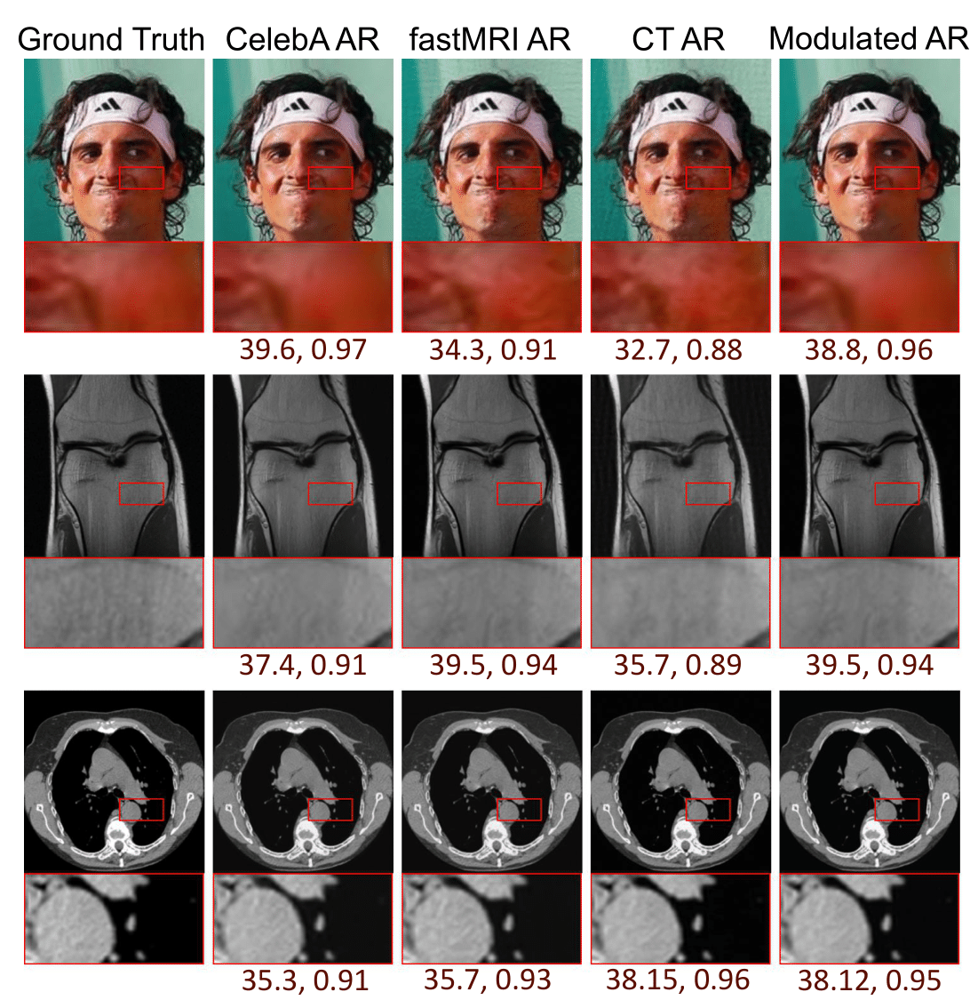
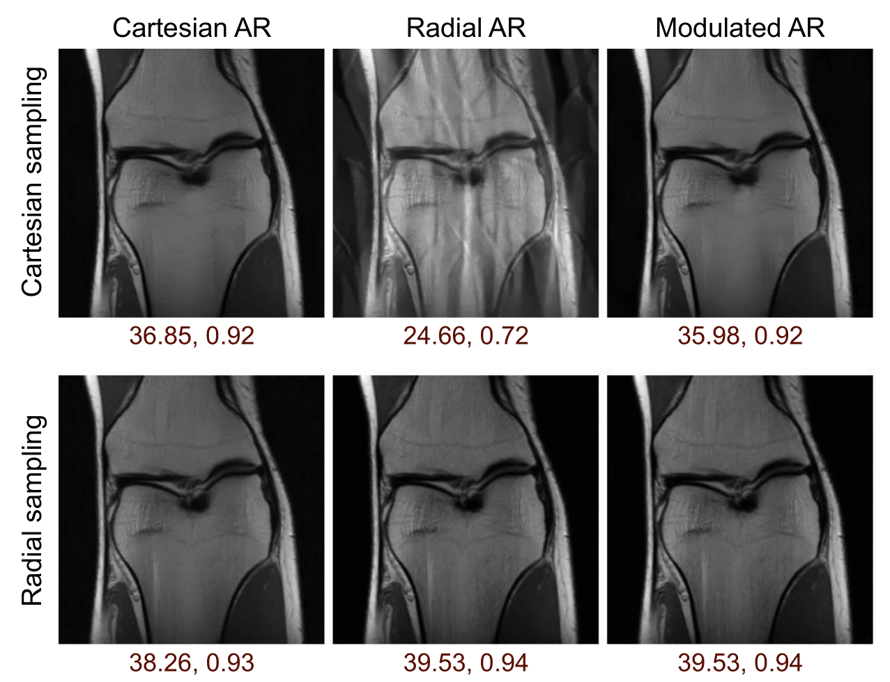
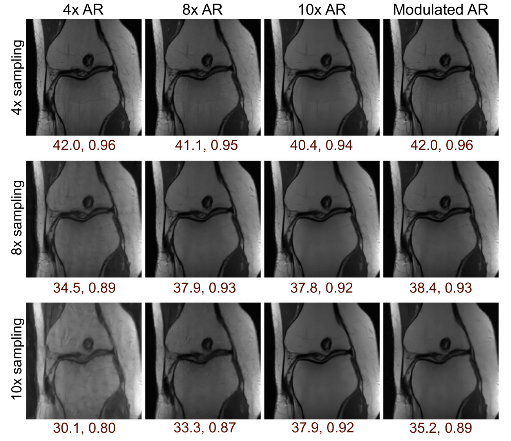

Domain, forward model, and noise level adaptation
We performed a number of experiments to analyze the effects of shifts in different parts of the inverse problem. The shifts can occur in the data distribution \( \mathbf{x} \), the forward model \( \mathbf{A} \), and the measurement noise \( \eta \). we start with a fixed base network, which we refer to as Base AR, and learn domain-specific rank-one modulations. Base AR is trained to reconstruct MR images from \( 4\times\) radially sub-sampled Fourier measurements without any measurement noise.
Domain shift adaptation
Fig. 4: Sample ground truth images in the first column and reconstruction of these images using three AR networks trained on Face, MR, and CT images in the subsequent three columns . Our modulated AR, shown in the last column effectively removes this artifacts and closes the performance gap.
Sampling pattern adaptation
Fig. 5: Reconstruction results under sampling pattern shifts. AR trained on radial pattern performs poorly when tested on Cartesian sampled patterns. Our Modulated AR applies low-rank modulations to adapt Radial AR to Cartesian samples.
Sampling ratio adaptation
Fig. 6: Examples of image reconstruction under sampling ratio shifts. Our Modulated AR shows an average superior performance when compared to the 4×, 8×, and 10× AR networks.
Noise level shift adaptation